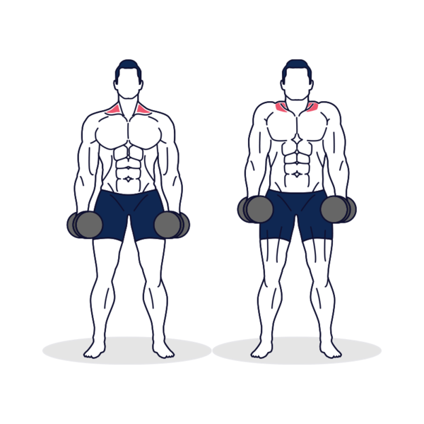

CURL CON MANCUERNAS
Sin mover el pecho, eleva la mancuerna flexionando el antebrazo. Durante el movimiento, rota la muñeca hacia afuera hasta que la mano esté en posición supina y recta. Contrae el bíceps, y luego vuelve lentamente a la posición inicial. Mantén el codo cerca del cuerpo durante el movimiento. Alterne este movimiento realizándolo con un brazo tras otro.
Musculos: Bíceps
Rutina: 3-5 series con 10-15 repeticiones y un descanso de 3 a 5 mn
CURL INVERTIDO
Sin mover el torso, levanta lentamente los antebrazos lo más posible apretándolos en la parte superior del movimiento, haz una pausa y luego baja lentamente la barra hasta la posición inicial. Mantén los codos metidos durante todo el movimiento. Repite el ejercicio el número de repeticiones deseadas.
Musculos: Bíceps y antebrazos
Rutina: 3-5 series con 10-15 repeticiones y un descanso de 3 a 5 mn
JALÓN AL PECHO CON AGARRE CERRADO
Lleva la carga hasta la parte superior del pecho sin apartar los codos del cuerpo. Mantén la contracción por un momento antes de volver lentamente a la posición inicial.
Musculos: Espalda y bíceps
Rutina: 3-5 series con 10-15 repeticiones y un descanso de 3 a 5 mn
REMO EN BARRA T
Manteniendo la postura, tira de las asas para que la placa suba hacia tu pecho. Haz una pausa justo antes de que toque, y luego bájala lentamente.
Musculos: Espalda, trapecio, bíceps y deltoides posteriores
Rutina: 3-5 series con 10-15 repeticiones y un descanso de 3 a 5 mn
DOMINADAS
Para hacer dominadas estrictas debes colgarte de una barra fija con las manos un poco más abierta que la separación entre tus hombros. Las manos deben mirar hacia el frente.
Musculos: Dorsal, el pectoral mayor y el bíceps braquial.
Rutina: 3-5 series con 10-15 repeticiones y un descanso de 3 a 5 mn
ENCONGIMIENTOS

Manteniendo los brazos extendidos, levanta los hombros lo más alto posible. Contrae los músculos del trapecio en la parte superior del movimiento, y luego vuelve lentamente a la posición inicial.
Musculos: Trapecio
Rutina: 3-5 series con 10-15 repeticiones y un descanso de 3 a 5 mn